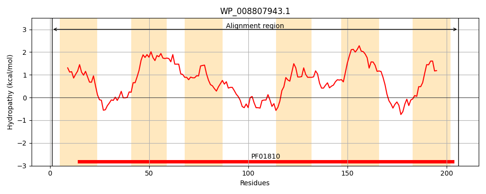
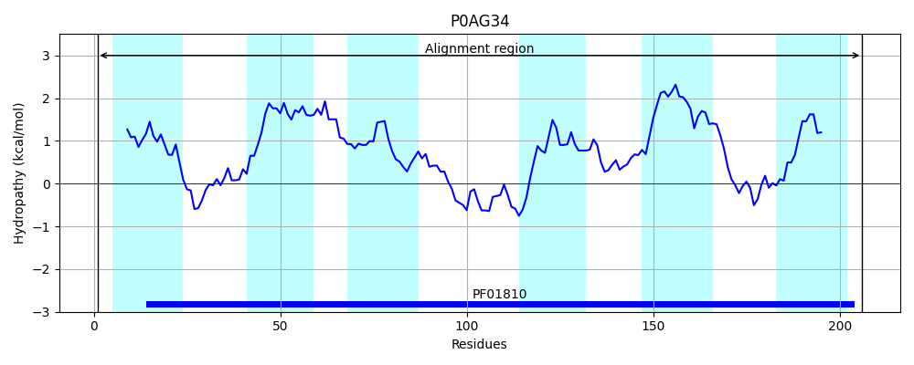
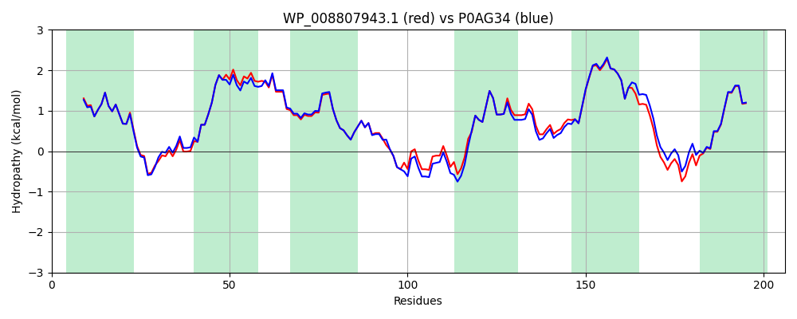

Hit Accession: P0AG34
Hit TCID: 2.A.76.1.1
Hit Description: gnl|BL_ORD_ID|8847 gnl|TC-DB|P0AG34|2.A.76.1.1 Homoserine/homoserine lactone efflux protein - Escherichia coli.
Mach Len: 206
e:0.000000
Query TMS Count : 6
Hit TMS Count: 6
TMS-Overlap Score: 5.900000
Predicted Substrates:CHEBI:30653;homoserine, CHEBI:30656;homoserine lactone
BLAST Alignment:
Score: 959 , Bit scores: 374 bits, E-value: 4.4e-134, Alignment length: 206, Percentage identity: 91
Query: 1 MTIEWWFAYLLTSIILSLSPGSGAINTMTTSINHGYRGAAASIAGLQTGLVIHIVLVGVGLGTLFSRSVLAFEVLKWAGAAYLIWLGIQQWRAAGAIDLNTLAKAQTRGKLFQRAVFVNLTNPKSIVFLAALFPQFILPHQPQVMQYLVLGVTTIVVDIIVMIGYATLAQRISAWIKGPKQMKALNKVFGSLFMLVGALLASARHA 206
MT+EWWFAYLLTSIILSLSPGSGAINTMTTS+NHGYRGA ASIAGLQTGL IHIVLVGVGLGTLFSRSV+AFEVLKWAGAAYLIWLGIQQWRAAGAIDL +LA Q+R LFQRAVFVNLTNPKSIVFLAALFPQFI+P QPQ+MQY+VLGVTTIVVDIIVMIGYATLAQRI+ WIKGPKQMKALNK+FGSLFMLVGALLASARHA
Sbjct: 1 MTLEWWFAYLLTSIILSLSPGSGAINTMTTSLNHGYRGAVASIAGLQTGLAIHIVLVGVGLGTLFSRSVIAFEVLKWAGAAYLIWLGIQQWRAAGAIDLKSLASTQSRRHLFQRAVFVNLTNPKSIVFLAALFPQFIMPQQPQLMQYIVLGVTTIVVDIIVMIGYATLAQRIALWIKGPKQMKALNKIFGSLFMLVGALLASARHA 206 | Protein Hydropathy Plots: |
|---|
|  |  |
Pairwise Alignment-Hydropathy Plot:
|
|---|
|  |